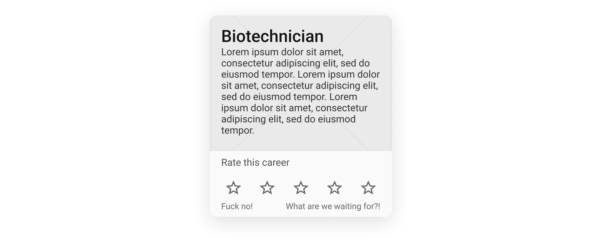
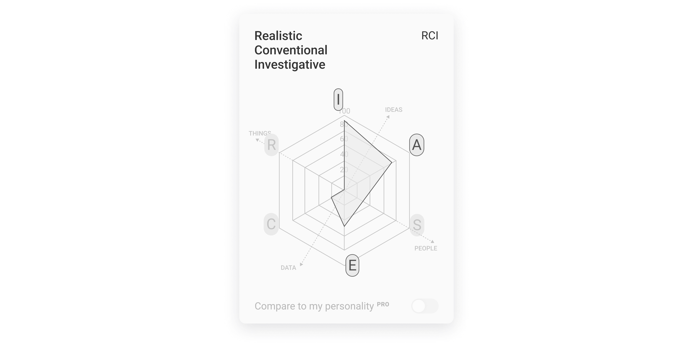
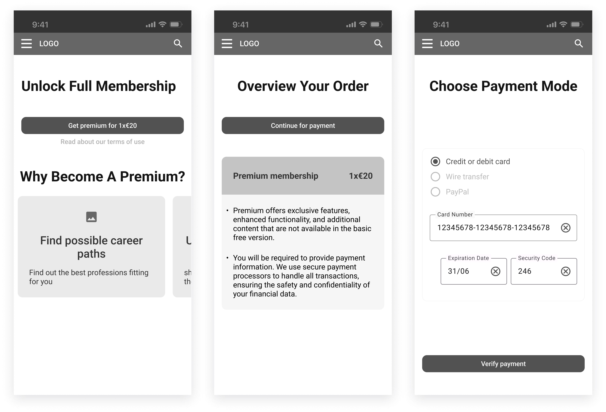
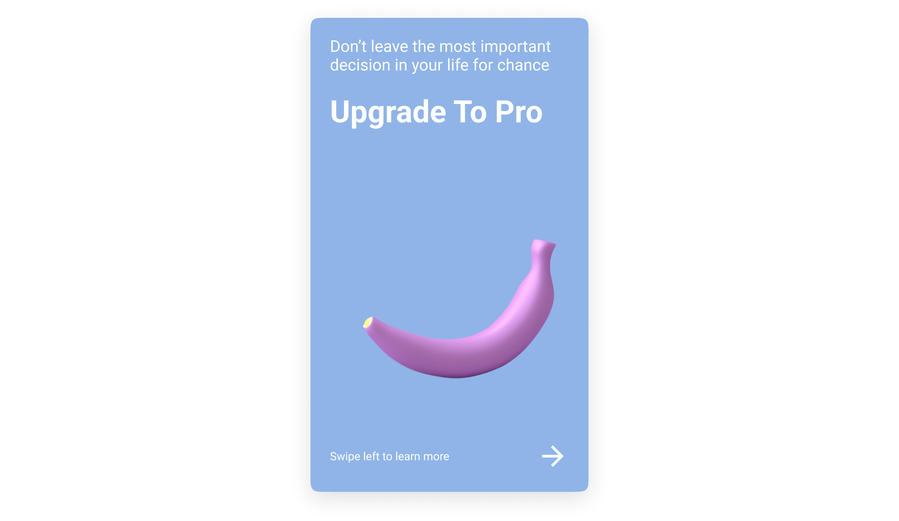
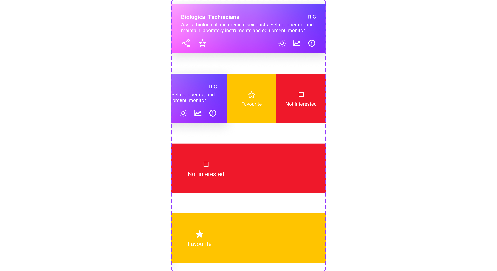

This is
Careeverze
An immersive UX journey

Summary
The making of careeverze. Please join me on an immersive journey as we dive deep into the nitty-gritty of building a web platform for career planning from a UX perspective.
Aron Kovacs - Product Design, Product Management
Mark Tumpek - Business Development
Levente Lang - Full Stack Developer, Machine Learning Engineer
Viktoria Gaszper - UX consultant
To become “a compass in the world of work".
Methodology
We followed the classic double diamond model, but with an agile twist. We researched, analyzed, created and validated not just on a macro level but on a micro too. It's because we needed as much feedback from users and reality as often and as quickly as possible.
Core problem
Let's imagine you have just finished studying economics and realized that you want to do something different. You want to do something with product design. This may certainly sound like an extreme case but for a second let's play with the thought that this is really happening...
"Millions of people have left their jobs in search of more fulfilling roles with greater flexibility, it's been called the Great Reshuffle." - World Economic Forum
To begin with your transition into Product Design, UX Design seems like a great place to start, right?
But what is UX Design exactly? And where should I begin my journey with that?
You google the questions and realize that even though the field of UX Design is barely a decade old, but somehow it has already expanded into this vast place with a myriad of opportunities. So you ask yourself even more questions...
Should I work on information architecture? Or should I do something with animation design? Or maybe I should become a conversion rate optimization consultant, and fine tune the heck out of our landing page?
These are only some of the questions you have to answer to start walking on your journey. And we still haven't even touched on long term career planning.
There has to be a better way to plan smartly one of the most important aspects of one's life: career.
And so we decided to make career planning effective and transparent.
Check out our CREDO
Competitor analysis
Initial research has proved that there is indeed a need for a career planning solution. There are currently platforms, individuals and companies who serve the career counsellor role but none of the European players can connect you to your most fitting career options based on current job market conditions.
Check out our COMPETITOR ANALYSIS
RESEARCH
As a secondary school director in one of our expert interviews had promptly stated: "In most cases, students will go on to do jobs that do not even exist today." This sums up perfectly the current fast changing market conditions for which teachers, counselors and institutions are not prepared.
Secondary research
As much smarter people have said before us, Gen Z - our target userbase - is the latest generation to "just barely" enter the workforce. So there is limited research available on this cohort, and of limited quality.
"All research around Gen Z currently focuses on students, making it challenging to predict their job-related behavior." EMERALD INSIDE
In addition, our research typically relies on US research, so Gen Z in Europe may be more nuanced than this.
- With that said, we can say that Generation Z is:
- Hypercognitive
- Hybrid
- Generalist
- Individualist
- Independent
And most importantly career-oriented (success-oriented).
- In order of importance to them in terms of career choice:
- Money
- Purpose
- Work-life balance
- More human (e.g.: the job role is focusing on human interactions)
- And their major challenges are:
- What career am I interested in?
- How can I tell what I'm good at or bad at?
- Anxiety
Check out our SECONDARY RESEARCH_HU where we dove deep into the relation between gen Z and career.
Expert interviews
The consensus among respondents is that career guidance in the traditional sense is bleeding from several wounds. Unpreparedness in public education, lack of interest on the part of students and under-informed guidance counselors all contribute to poor career choices. Where parents are not aware of the labor market, students mostly turn to their teachers, who are often unable to provide adequate assistance, as few of them are qualified to do so. Therefore, they often start with the fact that what the child is good at is what the child should do, which is clearly wrong (e.g.: "you are good in chemics therefore you should be a doctor").
Some of the emerging questions after the interviews
Is there a need today for young people to be helped in their career choices? For those who do have a need, what tools do they use to find their way and how do they relate to them? Are any of those tools effective?
Who is willing to pay for this information (e.g. parents, schools, school districts, state, etc.) aka do we have a "hidden" secondary user behind our target users (e.g. parents, teachers, counselors)?
Is testing necessary to inform students' career choices in a meaningful way? (Testing could be e.g.: personality, IQ, soft skill, value, interest, etc.)
Another important question is whether the product should be a browser interface to be explored or a more "directional" system?
What are students' feelings about career choices? * How do students feel about career guidance in the classical sense (e.g. counseling)?
Check out our EXPERT INTERVIEWS where we asked senior consultants, teachers and institutional leaders on their thoughts on the relation between younger generations and career.
Among the interviewed subjects (university students and high schoolers), there is a typical uncertainty surrounding the choice of "profession". There is a demand for a medium-term commitment (3-5 years) to a career choice, but in the absence of an adequate toolbox, most students plan for the short term (1-2 years). The strategy of choosing a university that broadly covers their interests, but without a concrete idea of where they want to "end up", was typical of the subjects. The choice of career path is perhaps more crystallized towards the end of university. Another typical strategy is to study "even further" as a problem-solving tool to answer the career choice. E.g.: after a bachelor's degree, to do a Master's degree or even to start a completely different bachelor's degree. The experience gained can thus be increased within the academy. Students may need support in choosing a career. The question remains whether information on available careers can sufficiently meet this need.
Check out our USER INTERVIEWS where we asked 11 aspiring career starter to tell us their problems, wishes and thoughts on the matter.
Pretotyping
Again we followed the classic double diamond model, but with an agile twist. We research, analyze, create and validate not just on a macro level but on a micro level too. At this point it became obvious that our problem was real. And so we built a pretotype to test our hypothesis: building a career planning solution could empower GenZ to make well-informed career choices.
Check out our PRETOTYPE_HU
We tested the pretotype with a handful of IT students and Levente - currently doing his masters in computer science - liked the idea (the problem) so much that he joined us on board as our developer.
ANALYZE
Since we had a clear goal in mind: build a career planning solution, we knew the users we wanted to serve: gen Z. And since we had a rich foundation of qualitative research data we jumped headstraight into analyzing. As an end result we hypothetised a possible user journey and finally formed our persona.
Affinity mapping
Against our secondary research almost all af the interviewed users (9 out of 12) said that purpose in their career is more important than money. Which was a huge surprise for us, but nevertheless an important piece of the puzzle and a good sign, that career does matter to gen Z.
Insights from interviews
Another important part were a general set of bad experiences throughout early schooling up until the university (for some even then) which resulted in bad faith for the institutions but more importantly that resulted in short term strategy where users plan for 1-2 years ahead and some even try to postpone serious decisions as much as they could. An example below:
Behavioural variables
But it became truly clear through the behavioural variables who our typical user...
Persona
And so our persona was born.
CREATE
In this phase we were focused on creating a wireframe. We followed again a slightly unusual formula and fine tuned our design system as part of the UX (not UI) process. This was meant to make it much much more easy to create the UI but also at a later stage (which is not part of this case study's scope) to enable us to design straight at a high-level.
Collecting best practices
Two of our key competitors (in the US market) were the US Onet and CareerExplorer. We closely examined the two, by mapping their information architecture and testing the tests they offer. It became clear that combining the best of both plus creating a superb UX will be our competitive advantage.
Site map
Low and behold our sitemap. Which is useful for later on in the development process but also for us, to see user rights at a glance.

Design System
I have made a huge mistake here and paid the price for it (in many many hours of extra work). Initially we used an old design system template of mine and since Figma (our design tool) has changed and updated so much that caused more headache later on to replace that than it should have... Anyways we used Material 3 design system and adapted to our advantage as well as created some of the components we needed from scratch. Because I don't want to overwhelm you, let's just discuss one of the key pieces.
First being the job mini card. This can enable the user at a glance to gather important pieces of information. Like a short description, the most fitting personality, general outlooks and requirements. This went through quite a lot of iterations till we got to this point. The main inspiration behind it was the push notifs in iOS. One question remains with this but (actually a couple but nevermind) let's speak about that in the prototype part.
Another key piece is the job rate card. Hopefully this does not require any additional information. You just rate the given job on a likert scale. This is also hugely important because the user rates quite a lot of jobs throughout the assessment phase. One thing to mention though, I am still unsure how we should spice up the background in a scaleable manner?
And least but not last the holland hexagon. This is the backbone of the assessment and job allocation. Based on the unique holland personality we can fit users to matching jobs.
Wireframing
And so our journey began and we started wireframing the screens. We went through 7 versions till we got the final part. From a low fidelity all the way to medium to high one. At the end of every distinct version we design critique-d the end results and iterated accordingly. Basically we got ourselves 5 distinct parts: onboarding, careeverse, explore, assessment and analyze. Also there is a free and a premium version (freemium) and so some of the parts have separate screens for each one. Below you may find the individual job point (explore - premium) screens. Because there is loads of information concerning every single job point, this is divided into three parts: overview, work context and preparation.
Another key piece is the landing page. Which serves two purpose: a navigational main-point for free users and selling the premium features.
I feel like there is also a hidden key piece which could result in a lot of user churn and that is the payment-sign up part. I shamelessly admit we copied almost everything from one of the major players: spotify.
VALIDATE
At this stage it was ripe time to test our hypothesis, now with a real prototype.
Prototyping
But before we could test our proto, we needed to breathe some life into them because most users would be shocked to use a designless thing. Therefore just for the sake of testing (this is not the final design) we gave it some design.
Because a screen can tell more than a thousand words please check out our prototype. But before you do that a couple of notes here. Please note that there is no right or wrong answer, so anything you feel is important and noteworthy! So if we meet in person and you check out the proto I would be very curious to hear your thoughts! With that being said, a couple more things to highlight (I'll keep it short I promise). Everything which is faded out is not available. If you click on the screen the interaction points will be highlighted. You may use the header navigation to go through the app. In the assessment part I saved you the time and you don't have to answer all the 100 questions so after three you will be redirected to the next stage. Please enjoy yourself!
A key interaction at this point is the swipe favorite and not interested features (still hesitant if these should be called that, and not like and dislike). This enables the user to swiftly collect noteworthy jobs at high speed.
Usability testing
And so we tested the prototype with 5 users from 3 distinct countries. This allowed us to get unbiased feedback. The key takeaways were two things. One macro two micro (okay that's three but nevermind). On a macro level based on the feedback it became clear that the two screens had an outsized impact on the user's feel. Guess which two they were? Yess you have guessed it right the landing page(s) and the individual job point. Users gave an outsized number of feedback here.
On micro level the main two takeaway were that the value proposition of the app is not clear at first glance (what should I do with the app and why?). And also that users need much more stimulus and less information because dry facts can overwhelm there senses very easily.
And now coming to an end, I hope this was just as useful and fun for you as for me. I sure as hell learned so much and am now quite excited to hear your thoughts on this. Feel free to reach out to me on socials if anything comes to your mind.
UI sneak peak